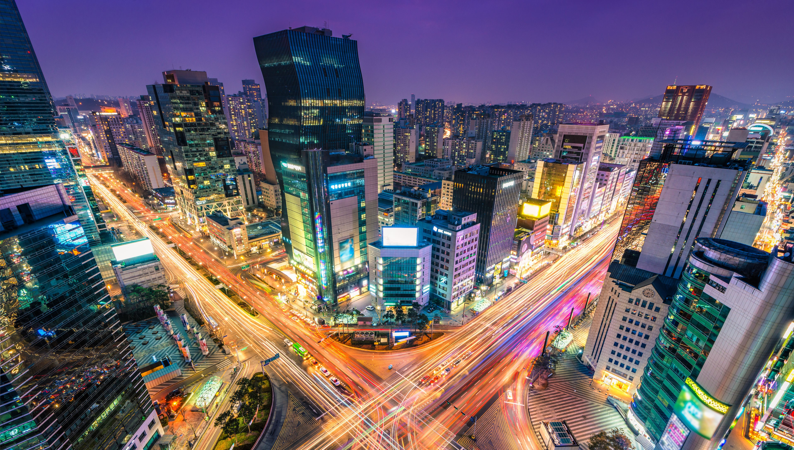
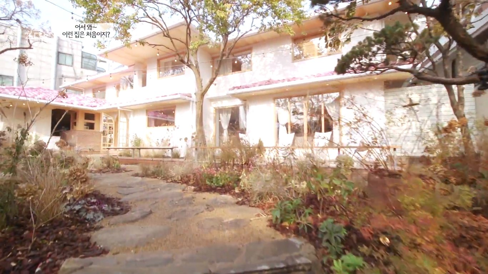

Korea
The Jeju Island in South Korea is one of the best places for me. After I saw it on the internet, and watch it in other Korean Dramas, I dream to go there. It looks so fun there and looks refreshing. When my brother told me South Korea is such a beautiful place and so many trees it makes me want to go there.
Jeju, also known as Jeju Island is the only self-governing province in South Korea, meaning that the province is run by local natives instead of politicians from the mainland. The island of Jeju was “formed by the eruption of an underwater volcano approximately 2 million years ago.” and is home to pristine nature and exquisite beaches.
I love watching Korean Dramas. Everyone inside our home is watching Korean Dramas, and listening to Korean Pop idols' songs as well. Korean is a very talented person that I admire a lot when it comes to arts. The Koreans are also good at cosmetics and their cosmetic surgeons are good too. There is a place called Gangnam City. Gangnam is a busy district that is quite the popular travel destination in Seoul, the capital city of South Korea. Gangnam literally means “South River.” This district is also known as the Beverly Hills of Korea, like the one in California.
 Gangnam literally means ‘south of the river,’ and this district in South Korea’s capital that lies along the banks of the Han, one of the country’s largest bodies of water. There’s plenty to do and see in this historically rich, fast-developing neighborhood. We explore some of the best.
While you are in Gangnam City you can also visit the one of the Big Three Entertainment in South Korea. JYP Entertainment is one of the Korean Idol producers and has a many artists that is working on this Entertainment.
JYP Entertainment Corporation (Korean: JYP 엔터테인먼트) is a South Korean multinational entertainment and record label conglomerate founded in 1997 by J. Y. Park. It is one of the largest entertainment companies in South Korea, and operates as a record label, talent agency, music production company, event management company, concert production company, and music publishing house.
But few know what the area called "the Beverly Hills of South Korea" is actually like. While the district is an economic hub for some of the most powerful companies globally, including Google, IBM, and Toyota, its real heart is its residential areas, where the deposit to rent a home costs 10 years of salary for the average Korean. Living in Gangnam — and more specifically living in the Gangnam neighborhoods of Cheongdam-dong and Apgujeong-dong — is a status symbol that many Koreans aspire to. Cheongdam-dong and Apgujeong-dong are home to many Korean actors, actresses, and idols, miles of luxury retail, a wild nightlife, and Korea's biggest entertainment companies. I recently took a walk through Cheongdam-dong and Apgujeong-dong to get a feel for what life is like in Korea's most affluent district.
Black Pink House since I am a fan of BlackPink I really want to visit their house even if I didn't hava a chance to see them. It will make my heart pound like doki doki. BLACKPINK HOUSE is built in the youthful and fun city of Hongdae, where members can enjoy a fun social life. All the members are clearly excited to live in their new mansion and share the whole experience with their fans!
BlackPink is consiting a 4 members.Blackpink (Korean: 블랙핑크; commonly stylized as BLACKPINK or BLΛƆKPIИK) is a South Korean girl group formed by YG Entertainment, consisting of members Jisoo, Jennie, Rosé, and Lisa. The group debuted in August 2016 with their single album Square One, which featured "Whistle" and "Boombayah", their first number-one entries on South Korea's Gaon Digital Chart and the Billboard World Digital Song Sales chart, respectively.